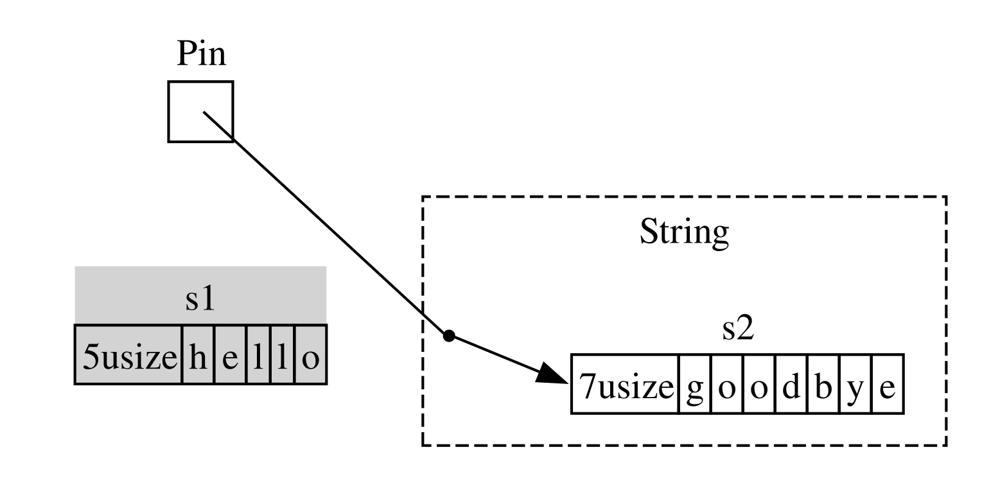

async-এর trait-গুলো আরও কাছ থেকে দেখা
এই অধ্যায় জুড়ে আমরা Future, Stream আর StreamExt trait নানাভাবে ব্যবহার করেছি। তবে এ পর্যন্ত এগুলো কীভাবে কাজ করে বা কীভাবে একসঙ্গে খাপ খায় তার খুঁটিনাটিতে বেশি ঢোকা এড়িয়ে গেছি,
যা প্রতিদিনের Rust কাজে বেশিরভাগ সময় ঠিকই আছে। তবে কখনো কখনো এমন পরিস্থিতিতে পড়বেন যেখানে এই trait-গুলোর আরও কিছু খুঁটিনাটি বুঝতে হবে, সঙ্গে Pin type আর Unpin trait-ও। এই অংশে
আমরা ঠিক ততটুকুই গভীরে যাব যতটুকু ওই পরিস্থিতিতে সাহায্য করে, সত্যিকারের গভীর আলোচনা অন্য documentation-এর জন্য রেখে দিয়ে।
Future trait
চলুন Future trait কীভাবে কাজ করে তা আরও কাছ থেকে দেখা দিয়ে শুরু করি। Rust একে এভাবে সংজ্ঞায়িত করে:
#![allow(unused)]
fn main() {
use std::pin::Pin;
use std::task::{Context, Poll};
pub trait Future {
type Output;
fn poll(self: Pin<&mut Self>, cx: &mut Context<'_>) -> Poll<Self::Output>;
}
}এই trait-এর সংজ্ঞায় বেশ কিছু নতুন type আর এমন কিছু syntax আছে যা আগে দেখিনি, তাই চলুন সংজ্ঞাটি টুকরো টুকরো করে দেখি।
প্রথমত, Future-এর associated type Output বলে future-টি শেষে কোন মানে পরিণত হয়। এটি Iterator trait-এর Item associated type-এর মতো। দ্বিতীয়ত, Future-এর poll method আছে, যা
তার self parameter-এর জন্য একটি বিশেষ Pin reference আর একটি Context type-এর mutable reference নেয়, এবং একটি Poll<Self::Output> return করে। Pin আর Context নিয়ে একটু পরেই আরও
বলব। আপাতত method-টি কী return করে, অর্থাৎ Poll type-এর দিকে মনোযোগ দিই:
#![allow(unused)]
fn main() {
pub enum Poll<T> {
Ready(T),
Pending,
}
}এই Poll type একটি Option-এর মতো। এর একটি variant-এ মান আছে, Ready(T), আর একটিতে নেই, Pending। তবে Poll-এর অর্থ Option থেকে বেশ আলাদা! Pending variant বোঝায় future-এর
এখনো কাজ বাকি, তাই caller-কে পরে আবার যাচাই করতে হবে। Ready variant বোঝায় Future তার কাজ শেষ করেছে এবং T মান পাওয়া যাচ্ছে।
Note: সরাসরি poll call করার দরকার খুব কমই হয়, তবে যদি করতে হয়, মনে রাখবেন যে বেশিরভাগ future-এর ক্ষেত্রে future Ready return করার পর caller-এর আবার poll call করা উচিত নয়।
প্রস্তুত হওয়ার পর আবার poll করলে অনেক future panic করবে। যে future আবার poll করা নিরাপদ, সেগুলো তাদের documentation-এ তা স্পষ্টভাবে বলে দেবে। এটি Iterator::next-এর আচরণের মতো।
await ব্যবহার করা কোড দেখলে জানবেন, Rust ভেতরে ভেতরে একে poll call করা কোডে compile করে। Listing 17-4-এর দিকে ফিরে তাকালে, যেখানে একটি URL-এর page title পাওয়া গেলে তা print
করেছিলাম, Rust একে মোটামুটি (যদিও হুবহু নয়) এমন কিছুতে compile করে:
match page_title(url).poll() {
Ready(page_title) => match page_title {
Some(title) => println!("The title for {url} was {title}"),
None => println!("{url} had no title"),
}
Pending => {
// But what goes here?
}
}future যখন এখনো Pending, তখন কী করা উচিত? আমাদের এমন কোনো উপায় দরকার, যাতে future শেষ পর্যন্ত প্রস্তুত না হওয়া পর্যন্ত বারবার চেষ্টা করা যায়। অন্যভাবে বললে, একটি loop দরকার:
let mut page_title_fut = page_title(url);
loop {
match page_title_fut.poll() {
Ready(value) => match page_title {
Some(title) => println!("The title for {url} was {title}"),
None => println!("{url} had no title"),
}
Pending => {
// continue
}
}
}তবে Rust যদি একে হুবহু ওই কোডে compile করত, তাহলে প্রতিটি await block করত—যা আমরা চাইছিলাম ঠিক তার উল্টো! বরং Rust নিশ্চিত করে যে loop এমন কিছুর হাতে নিয়ন্ত্রণ দিতে পারে, যা এই
future-এর কাজ থামিয়ে অন্য future-এর কাজ করতে পারে এবং পরে আবার এটি যাচাই করতে পারে। যেমন দেখেছি, সেই কিছু হলো একটি async runtime, আর এই সময়সূচি ও সমন্বয়ের কাজ এর প্রধান কাজগুলোর একটি।
“message passing দিয়ে দুটি task-এর মধ্যে ডেটা
পাঠানো” অংশে আমরা rx.recv-এর জন্য অপেক্ষা করার বর্ণনা দিয়েছিলাম। recv call একটি future return করে, আর future-এর জন্য await করলে একে poll করা হয়।
আমরা বলেছিলাম যে runtime future-টিকে থামিয়ে রাখবে, যতক্ষণ না এটি Some(message) নিয়ে, বা channel বন্ধ হলে None নিয়ে প্রস্তুত হয়। Future trait, বিশেষ করে Future::poll সম্পর্কে আরও
গভীর বোঝাপড়া নিয়ে এখন দেখতে পাই এটি কীভাবে কাজ করে। future Poll::Pending return করলে runtime জানে এটি প্রস্তুত নয়। উল্টোভাবে, poll যখন Poll::Ready(Some(message)) বা
Poll::Ready(None) return করে, তখন runtime জানে future প্রস্তুত আছে এবং একে এগিয়ে নেয়।
একটি runtime ঠিক কীভাবে তা করে তার খুঁটিনাটি এই বইয়ের আওতার বাইরে, তবে মূল কথা হলো future-এর মৌলিক কার্যপ্রণালী দেখা: একটি runtime তার দায়িত্বে থাকা প্রতিটি future poll করে, এবং future এখনো প্রস্তুত না হলে একে আবার ঘুম পাড়িয়ে দেয়।
Pin type ও Unpin trait
Listing 17-13-এ আমরা তিনটি future-এর জন্য await করতে trpl::join! macro ব্যবহার করেছিলাম। তবে vector-এর মতো এমন একটি collection থাকা প্রচলিত, যাতে কতগুলো future থাকবে তা runtime-এর
আগে জানা যাবে না। চলুন Listing 17-13 বদলে Listing 17-23-এর কোড করি, যা তিনটি future একটি vector-এ রেখে বরং trpl::join_all function call করে; এটি এখনো compile হবে না।
extern crate trpl; // required for mdbook test
use std::time::Duration;
fn main() {
trpl::block_on(async {
let (tx, mut rx) = trpl::channel();
let tx1 = tx.clone();
let tx1_fut = async move {
let vals = vec![
String::from("hi"),
String::from("from"),
String::from("the"),
String::from("future"),
];
for val in vals {
tx1.send(val).unwrap();
trpl::sleep(Duration::from_secs(1)).await;
}
};
let rx_fut = async {
while let Some(value) = rx.recv().await {
println!("received '{value}'");
}
};
let tx_fut = async move {
// --snip--
let vals = vec![
String::from("more"),
String::from("messages"),
String::from("for"),
String::from("you"),
];
for val in vals {
tx.send(val).unwrap();
trpl::sleep(Duration::from_secs(1)).await;
}
};
let futures: Vec<Box<dyn Future<Output = ()>>> =
vec![Box::new(tx1_fut), Box::new(rx_fut), Box::new(tx_fut)];
trpl::join_all(futures).await;
});
}প্রতিটি future-কে আমরা একটি Box-এর ভেতরে রাখি, যাতে এগুলো trait object হয়ে যায়, ঠিক যেমন অধ্যায় 12-এর “run থেকে error return করা” অংশে করেছিলাম। (trait object বিস্তারিত দেখব অধ্যায় 18-এ।)
trait object ব্যবহার করলে এই type-গুলোর তৈরি প্রতিটি নামহীন future-কে একই type হিসেবে ব্যবহার করা যায়, কারণ সবগুলোই Future trait implement করে।
এটি অবাক করার মতো লাগতে পারে। কারণ async block-গুলোর কোনোটিই কিছু return করে না, তাই প্রতিটি একটি Future<Output = ()> তৈরি করে। তবে মনে রাখবেন, Future একটি trait, আর compiler প্রতিটি
async block-এর জন্য একটি অনন্য enum তৈরি করে, এমনকি তাদের output type একই হলেও। যেমন হাতে লেখা দুটি ভিন্ন struct একটি Vec-এ রাখা যায় না, তেমনি compiler-এর তৈরি enum-ও মেশানো যায় না।
তারপর future-এর collection-টি trpl::join_all function-এ পাঠিয়ে ফলের জন্য await করি। কিন্তু এটি compile হয় না; error message-এর প্রাসঙ্গিক অংশ এই:
error[E0277]: `dyn Future<Output = ()>` cannot be unpinned
--> src/main.rs:48:33
|
48 | trpl::join_all(futures).await;
| ^^^^^ the trait `Unpin` is not implemented for `dyn Future<Output = ()>`
|
= note: consider using the `pin!` macro
consider using `Box::pin` if you need to access the pinned value outside of the current scope
= note: required for `Box<dyn Future<Output = ()>>` to implement `Future`
note: required by a bound in `futures_util::future::join_all::JoinAll`
--> file:///home/.cargo/registry/src/index.crates.io-1949cf8c6b5b557f/futures-util-0.3.30/src/future/join_all.rs:29:8
|
27 | pub struct JoinAll<F>
| ------- required by a bound in this struct
28 | where
29 | F: Future,
| ^^^^^^ required by this bound in `JoinAll`
এই error message-এর note আমাদের বলছে মানগুলোকে pin করতে pin! macro ব্যবহার করা উচিত, অর্থাৎ এগুলোকে Pin type-এর ভেতরে রাখা, যা নিশ্চয়তা দেয় যে মানগুলো মেমোরিতে সরবে না। error message
বলছে pin করা দরকার, কারণ dyn Future<Output = ()>-কে Unpin trait implement করতে হবে, আর এটি এখন তা করে না।
trpl::join_all function JoinAll নামের একটি struct return করে। সেই struct একটি type F-এর ওপর generic, যাকে Future trait implement করতে হবে। await দিয়ে সরাসরি একটি future-এর জন্য
await করলে future-টি অপ্রকাশ্যভাবে pin হয়ে যায়। এ কারণেই যেখানে যেখানে future-এর জন্য await করতে চাই, সব জায়গায় pin! ব্যবহার করতে হয় না।
তবে এখানে আমরা সরাসরি কোনো future-এর জন্য await করছি না। বরং join_all function-এ future-এর একটি collection পাঠিয়ে একটি নতুন future, JoinAll, তৈরি করছি। join_all-এর signature চায়
collection-এর item-গুলোর type সবই Future trait implement করুক, আর Box<T> Future implement করে কেবল তখনই, যদি এর মোড়ানো T এমন একটি future হয় যা Unpin trait implement করে।
এক সঙ্গে অনেক কিছু! সত্যিই বুঝতে চলুন Future trait আসলে কীভাবে কাজ করে, বিশেষ করে pinning-এর ক্ষেত্রে, তা আরেকটু গভীরে দেখি। Future trait-এর সংজ্ঞাটি আবার দেখুন:
#![allow(unused)]
fn main() {
use std::pin::Pin;
use std::task::{Context, Poll};
pub trait Future {
type Output;
// Required method
fn poll(self: Pin<&mut Self>, cx: &mut Context<'_>) -> Poll<Self::Output>;
}
}cx parameter আর এর Context type-ই হলো সেই চাবি, যা দিয়ে একটি runtime lazy থেকেও আসলে জানে কখন কোনো নির্দিষ্ট future যাচাই করতে হবে। আবারও, এটি কীভাবে কাজ করে তার খুঁটিনাটি এই
অধ্যায়ের আওতার বাইরে, আর সাধারণত শুধু নিজস্ব Future implementation লেখার সময়ই এ নিয়ে ভাবতে হয়। আমরা বরং self-এর type-এর দিকে মনোযোগ দেব, কারণ এই প্রথম এমন একটি method দেখছি
যেখানে self-এর type annotation আছে। self-এর type annotation অন্য function parameter-এর type annotation-এর মতোই কাজ করে, তবে দুটি মূল পার্থক্যসহ:
- এটি Rust-কে বলে method-টি call করতে হলে
self-কে কোন type-এর হতে হবে। - এটি যেকোনো type হতে পারে না। এটি সীমাবদ্ধ সেই type-এ যার ওপর method-টি implement করা, সেই type-এর একটি reference বা smart pointer, অথবা সেই type-এর একটি reference মোড়ানো একটি
Pin-এ।
এই syntax নিয়ে আরও দেখব অধ্যায় 18-এ। আপাতত এটুকু জানলেই যথেষ্ট যে একটি future Pending নাকি Ready(Output) তা যাচাই করতে poll করতে চাইলে আমাদের type-টির
একটি Pin-মোড়ানো mutable reference দরকার।
Pin হলো &, &mut, Box আর Rc-এর মতো pointer-সদৃশ type-এর একটি wrapper। (কারিগরি দিক থেকে Pin এমন type-এর সঙ্গে কাজ করে যা Deref বা DerefMut trait implement করে, তবে কার্যত
এটি শুধু reference আর smart pointer-এর সঙ্গে কাজ করার সমতুল্য।) Pin নিজে কোনো pointer নয়, আর reference counting-এর ক্ষেত্রে Rc আর Arc-এর যেমন নিজস্ব আচরণ আছে, এর তেমন কোনো নিজস্ব
আচরণ নেই; এটি পুরোপুরি একটি হাতিয়ার, যা দিয়ে compiler pointer ব্যবহারের ওপর বাধ্যবাধকতা প্রয়োগ করতে পারে।
await যে poll call দিয়ে implement করা, তা মনে করলে আগে দেখা error message-এর ব্যাখ্যা কিছুটা পাওয়া যায়, কিন্তু সেটি ছিল Pin নয়, Unpin নিয়ে। তাহলে Pin ঠিক কীভাবে Unpin-এর
সঙ্গে সম্পর্কিত, আর poll call করতে Future-এর কেন self-কে একটি Pin type-এ থাকা দরকার?
এই অধ্যায়ের আগের অংশ থেকে মনে করুন, একটি future-এর ধারাবাহিক await point-গুলো একটি state machine-এ compile হয়, আর compiler নিশ্চিত করে যে সেই state machine নিরাপত্তা নিয়ে Rust-এর সব সাধারণ নিয়ম মেনে চলে, borrowing আর ownership-সহ। এটি কাজ করাতে Rust দেখে একটি await point আর পরের await point বা async block-এর শেষের মাঝে কোন ডেটা দরকার। তারপর compile করা state machine-এ একটি সংশ্লিষ্ট variant তৈরি করে। source code-এর সেই অংশে যে ডেটা ব্যবহার হবে, প্রতিটি variant সেই ডেটায় তার দরকারি প্রবেশাধিকার পায়, হয় সেই ডেটার ownership নিয়ে, নয়তো এর একটি mutable বা immutable reference নিয়ে।
এ পর্যন্ত সব ঠিক আছে: কোনো async block-এ ownership বা reference নিয়ে কিছু ভুল করলে borrow checker আমাদের জানাবে। কিন্তু যখন সেই block-এর সংশ্লিষ্ট future-কে এদিক-ওদিক সরাতে চাই—যেমন
join_all-এ পাঠাতে একে একটি Vec-এ সরানো—তখন ব্যাপারটা জটিল হয়ে যায়।
যখন একটি future সরাই—হোক join_all-এর সঙ্গে iterator হিসেবে ব্যবহারের জন্য একটি data structure-এ push করে, বা একটি function থেকে return করে—তখন আসলে Rust আমাদের জন্য যে state machine তৈরি
করে সেটিই সরানো হয়। আর Rust-এর অন্য বেশিরভাগ type-এর মতো নয়, async block-এর জন্য Rust যে future তৈরি করে, তাদের কোনো variant-এর field-এ নিজেদেরই reference থেকে যেতে পারে, যেমনটি Figure 17-4-এর সরলীকৃত চিত্রে দেখানো হয়েছে।

তবে default-ভাবে নিজের reference আছে এমন যেকোনো object সরানো অনিরাপদ, কারণ reference সবসময় যেটিকে নির্দেশ করে তার আসল মেমোরি ঠিকানাকে নির্দেশ করে (Figure 17-5 দেখুন)। data structure-টি নিজে সরালে সেই ভেতরের reference-গুলো পুরোনো জায়গাকেই নির্দেশ করতে থাকবে। কিন্তু সেই মেমোরির জায়গা এখন অবৈধ। একটি কারণ, data structure-এ পরিবর্তন আনলে এর মান হালনাগাদ হবে না। আরেকটি—আরও গুরুত্বপূর্ণ—কারণ হলো, কম্পিউটার এখন সেই মেমোরি অন্য কাজে আবার ব্যবহার করতে স্বাধীন! পরে আপনি হয়তো একেবারে সম্পর্কহীন ডেটা পড়ে ফেলবেন।

তাত্ত্বিকভাবে, Rust compiler কোনো object সরানোর সময় প্রতিবার এর প্রতিটি reference হালনাগাদ করার চেষ্টা করতে পারত, কিন্তু তাতে performance-এর অনেক বাড়তি খরচ হতে পারত, বিশেষ করে যদি reference-এর একটি পুরো জাল হালনাগাদ করতে হয়। এর বদলে যদি নিশ্চিত করা যেত যে সংশ্লিষ্ট data structure মেমোরিতে সরে না, তাহলে কোনো reference হালনাগাদ করতে হতো না। Rust-এর borrow checker ঠিক এই কাজটিই করে: নিরাপদ কোডে কোনো item-এর সক্রিয় reference থাকলে এটি item-টি সরাতে দেয় না।
Pin এর ওপর ভিত্তি করে আমাদের ঠিক দরকারি নিশ্চয়তাটি দেয়। একটি মানের দিকে একটি pointer-কে Pin-এ মুড়ে যখন মানটি pin করি, তখন এটি আর সরতে পারে না। তাই আপনার কাছে যদি
Pin<Box<SomeType>> থাকে, তাহলে আসলে আপনি SomeType মানটি pin করছেন, Box pointer-টি নয়। Figure 17-6 এই প্রক্রিয়াটি দেখায়।
![পাশাপাশি সাজানো তিনটি বাক্স। প্রথমটিতে লেখা “Pin”, দ্বিতীয়টিতে “b1”, আর তৃতীয়টিতে “pinned”। “pinned”-এর ভেতরে “fut” লেখা এক কলামের একটি table আছে; এটি একটি future বোঝায়, যার data structure-এর প্রতিটি অংশের জন্য একটি করে ঘর। এর প্রথম ঘরে মান “0”, দ্বিতীয় ঘর থেকে একটি তীরচিহ্ন বেরিয়ে চতুর্থ ও শেষ ঘরের দিকে গেছে, যাতে মান “1”, আর তৃতীয় ঘরে ড্যাশ-দেওয়া রেখা আর তিন বিন্দু, যা বোঝায় data structure-এর আরও অংশ থাকতে পারে। সব মিলিয়ে “fut” table নিজেকেই reference করে এমন একটি future বোঝায়। একটি তীরচিহ্ন “Pin” লেখা বাক্স থেকে বেরিয়ে “b1” লেখা বাক্সের ভেতর দিয়ে গিয়ে “pinned” বাক্সের ভেতরে “fut” table-এ শেষ হয়।](img/trpl17-06.svg)
আসলে Box pointer এখনো স্বাধীনভাবে এদিক-ওদিক সরতে পারে। মনে রাখবেন: আমাদের মাথাব্যথা শেষ পর্যন্ত যে ডেটাকে reference করা হচ্ছে তা জায়গায় থাকছে কি না। একটি pointer যদি এদিক-ওদিক সরে, কিন্তু
এটি যে ডেটাকে নির্দেশ করে তা একই জায়গায় থাকে, যেমনটি Figure 17-7-এ, তাহলে কোনো সম্ভাব্য সমস্যা নেই। (একটি স্বাধীন অনুশীলন হিসেবে type-গুলোর আর std::pin module-এর docs দেখে বের করার
চেষ্টা করুন একটি Box মোড়ানো Pin দিয়ে কীভাবে এটা করতেন।) মূল কথা হলো নিজেকেই reference করে এমন type-টি নিজে সরতে পারে না, কারণ এটি এখনো pin করা।

তবে বেশিরভাগ type এদিক-ওদিক সরানো পুরোপুরি নিরাপদ, এমনকি সেগুলো ঘটনাচক্রে একটি Pin pointer-এর পেছনে থাকলেও। item-এর ভেতরের reference থাকলে কেবল তখনই pinning নিয়ে ভাবতে হয়। সংখ্যা আর
Boolean-এর মতো primitive মান নিরাপদ, কারণ স্পষ্টতই এদের কোনো ভেতরের reference নেই। Rust-এ সাধারণত যে type-গুলো নিয়ে কাজ করেন, তাদের বেশিরভাগেরও নেই। যেমন, কোনো চিন্তা না করেই একটি Vec
এদিক-ওদিক সরাতে পারেন। এ পর্যন্ত যা দেখেছি তার ভিত্তিতে, আপনার কাছে একটি Pin<Vec<String>> থাকলে Pin-এর দেওয়া নিরাপদ কিন্তু সীমাবদ্ধ API দিয়ে সবকিছু করতে হতো, যদিও অন্য কোনো
reference না থাকলে একটি Vec<String> সবসময় সরানো নিরাপদ। এমন ক্ষেত্রে item এদিক-ওদিক সরানো যে ঠিক আছে তা compiler-কে জানানোর একটি উপায় দরকার—আর এখানেই আসে Unpin।
Unpin একটি marker trait, অধ্যায় 16-এ দেখা Send আর Sync trait-এর মতো, তাই এর নিজস্ব কোনো কার্যক্ষমতা নেই। marker trait থাকে শুধু compiler-কে জানাতে যে একটি নির্দিষ্ট trait implement
করা type নির্দিষ্ট একটি প্রেক্ষাপটে ব্যবহার করা নিরাপদ। Unpin compiler-কে জানায় যে সংশ্লিষ্ট মানটি নিরাপদে সরানো যায় কি না সে বিষয়ে একটি নির্দিষ্ট type-কে কোনো নিশ্চয়তা বজায় রাখতে
হয় না।
Send আর Sync-এর মতোই, যেসব type-এর ক্ষেত্রে compiler প্রমাণ করতে পারে যে এটি নিরাপদ, সেগুলোর জন্য এটি স্বয়ংক্রিয়ভাবে Unpin implement করে। একটি বিশেষ ক্ষেত্র, আবারও Send আর
Sync-এর মতো, হলো যখন একটি type-এর জন্য Unpin implement করা হয় না। এর চিহ্ন হলো impl !Unpin for SomeType, যেখানে
SomeType হলো এমন একটি type-এর নাম, যার pointer যখনই একটি Pin-এ ব্যবহার হয়, নিরাপদ থাকতে তাকে সেই নিশ্চয়তাগুলো বজায় রাখতে হয়।
অন্যভাবে বললে, Pin আর Unpin-এর সম্পর্ক নিয়ে দুটি বিষয় মনে রাখতে হবে। প্রথমত, Unpin হলো “সাধারণ” ক্ষেত্র, আর !Unpin বিশেষ ক্ষেত্র। দ্বিতীয়ত, একটি type Unpin নাকি !Unpin
implement করে, তা কেবল তখনই গুরুত্বপূর্ণ, যখন আপনি সেই type-এর একটি pin করা pointer ব্যবহার করছেন, যেমন Pin<&mut
SomeType>।
বিষয়টি স্পষ্ট করতে একটি String-এর কথা ভাবুন: এর একটি দৈর্ঘ্য আর এটি গঠনকারী Unicode অক্ষরগুলো আছে। একটি String-কে Pin-এ মোড়ানো যায়, যেমনটি Figure
17-8-এ দেখা যাচ্ছে। তবে Rust-এর অন্য বেশিরভাগ type-এর মতোই String স্বয়ংক্রিয়ভাবে Unpin implement করে।

ফলে আমরা এমন কাজ করতে পারি, যা String বরং !Unpin implement করলে অবৈধ হতো, যেমন মেমোরির হুবহু একই জায়গায় একটি string-এর বদলে আরেকটি string বসানো, যেমনটি Figure 17-9-এ। এটি Pin-এর
চুক্তি ভঙ্গ করে না, কারণ String-এর এমন কোনো ভেতরের reference নেই যা একে সরানো অনিরাপদ করে। ঠিক এ কারণেই এটি !Unpin-এর বদলে Unpin implement করে।

এখন Listing 17-23-এর সেই join_all call-এর জন্য দেখানো error বোঝার মতো যথেষ্ট জানি। আমরা শুরুতে async block-এর তৈরি future-গুলো একটি Vec<Box<dyn Future<Output = ()>>>-এ সরানোর চেষ্টা
করেছিলাম, কিন্তু যেমন দেখেছি, সেই future-গুলোর ভেতরের reference থাকতে পারে, তাই এরা স্বয়ংক্রিয়ভাবে Unpin implement করে না। এগুলো pin করে ফেললে ফলাফলের Pin type Vec-এ পাঠাতে পারি,
এই আস্থা নিয়ে যে future-গুলোর ভেতরের ডেটা সরবে না। Listing 17-24-এ দেখানো হয়েছে তিনটি future যেখানে সংজ্ঞায়িত সেখানে pin! macro call করে এবং trait object type ঠিক করে কীভাবে কোডটি
সারানো যায়।
extern crate trpl; // required for mdbook test
use std::pin::{Pin, pin};
// --snip--
use std::time::Duration;
fn main() {
trpl::block_on(async {
let (tx, mut rx) = trpl::channel();
let tx1 = tx.clone();
let tx1_fut = pin!(async move {
// --snip--
let vals = vec![
String::from("hi"),
String::from("from"),
String::from("the"),
String::from("future"),
];
for val in vals {
tx1.send(val).unwrap();
trpl::sleep(Duration::from_secs(1)).await;
}
});
let rx_fut = pin!(async {
// --snip--
while let Some(value) = rx.recv().await {
println!("received '{value}'");
}
});
let tx_fut = pin!(async move {
// --snip--
let vals = vec![
String::from("more"),
String::from("messages"),
String::from("for"),
String::from("you"),
];
for val in vals {
tx.send(val).unwrap();
trpl::sleep(Duration::from_secs(1)).await;
}
});
let futures: Vec<Pin<&mut dyn Future<Output = ()>>> =
vec![tx1_fut, rx_fut, tx_fut];
trpl::join_all(futures).await;
});
}এই উদাহরণ এখন compile হয়ে চলে, আর আমরা runtime-এ vector-এ future যোগ বা বাদ দিয়ে সবগুলো একসঙ্গে join করতে পারতাম।
Pin আর Unpin মূলত গুরুত্বপূর্ণ নিম্ন-স্তরের library বানানোর সময়, বা যখন নিজেই একটি runtime বানাচ্ছেন, প্রতিদিনের Rust কোডের জন্য নয়। তবে error message-এ এই trait-গুলো দেখলে এখন
আপনার কোড কীভাবে ঠিক করবেন সে সম্পর্কে আরও ভালো ধারণা থাকবে!
Note: Pin আর Unpin-এর এই সমন্বয় Rust-এ এমন এক পুরো শ্রেণির জটিল type নিরাপদে implement করা সম্ভব করে, যা নিজেকেই reference করে বলে অন্যথায় কঠিন হতো। Pin দরকার এমন type
আজকাল সবচেয়ে বেশি দেখা যায় async Rust-এ, তবে মাঝে মাঝে অন্য প্রেক্ষাপটেও দেখতে পারেন।
Pin আর Unpin কীভাবে কাজ করে এবং এদের কোন নিয়ম বজায় রাখতে হয়, তার খুঁটিনাটি std::pin-এর API documentation-এ বিস্তারিত আলোচনা করা আছে, তাই আরও জানতে আগ্রহী হলে সেখান থেকে শুরু
করা চমৎকার।
ভেতরে ভেতরে জিনিসগুলো কীভাবে কাজ করে তা আরও বিস্তারিত বুঝতে চাইলে Asynchronous Programming in Rust-এর অধ্যায় 2 আর 4 দেখুন।
Stream trait
Future, Pin আর Unpin trait সম্পর্কে আরও গভীর ধারণা পাওয়ার পর এবার Stream trait-এর দিকে নজর দিতে পারি। অধ্যায়ের আগের অংশে যেমন শিখেছেন, stream asynchronous iterator-এর মতো। তবে
Iterator আর Future-এর মতো নয়, এই লেখার সময় পর্যন্ত standard library-তে Stream-এর কোনো সংজ্ঞা নেই, তবে futures crate-এর একটি খুবই প্রচলিত সংজ্ঞা আছে, যা পুরো ecosystem-এ ব্যবহৃত হয়।
একটি Stream trait কীভাবে এদের মিলিয়ে দিতে পারে তা দেখার আগে চলুন Iterator আর Future trait-এর সংজ্ঞা আবার দেখি। Iterator থেকে আমরা পাই একটি ধারার ধারণা: এর next method একটি
Option<Self::Item> দেয়। Future থেকে পাই সময়ের সঙ্গে প্রস্তুত হওয়ার ধারণা: এর poll method একটি Poll<Self::Output> দেয়। সময়ের সঙ্গে প্রস্তুত হওয়া item-এর একটি ধারা বোঝাতে আমরা
এমন একটি Stream trait সংজ্ঞায়িত করি, যা এই বৈশিষ্ট্যগুলো একসঙ্গে জুড়ে দেয়:
#![allow(unused)]
fn main() {
use std::pin::Pin;
use std::task::{Context, Poll};
trait Stream {
type Item;
fn poll_next(
self: Pin<&mut Self>,
cx: &mut Context<'_>
) -> Poll<Option<Self::Item>>;
}
}Stream trait stream-এর তৈরি item-এর type-এর জন্য Item নামের একটি associated type সংজ্ঞায়িত করে। এটি Iterator-এর মতো, যেখানে শূন্য থেকে অনেক item থাকতে পারে, আর Future-এর মতো
নয়, যেখানে সবসময় একটিমাত্র Output থাকে, তা unit type () হলেও।
Stream সেই item-গুলো পাওয়ার জন্য একটি method-ও সংজ্ঞায়িত করে। আমরা একে বলি poll_next, যাতে স্পষ্ট হয় যে এটি Future::poll-এর মতোই poll করে এবং Iterator::next-এর মতোই item-এর একটি ধারা
তৈরি করে। এর return type Poll-কে Option-এর সঙ্গে মেলায়। বাইরের type হলো Poll, কারণ একটি future-এর মতোই এটি প্রস্তুত কি না যাচাই করতে হয়। ভেতরের type হলো Option, কারণ একটি
iterator-এর মতোই এটি জানাতে হয় আরও message আছে কি না।
এই সংজ্ঞার খুব কাছাকাছি কিছু সম্ভবত শেষ পর্যন্ত Rust-এর standard library-র অংশ হবে। এর মধ্যে এটি বেশিরভাগ runtime-এর হাতিয়ারের অংশ, তাই এর ওপর নির্ভর করতে পারেন, আর এরপর যা আলোচনা করব তা সাধারণত প্রযোজ্য হওয়ার কথা!
তবে “stream: ক্রমানুসারে future” অংশে দেখা উদাহরণগুলোতে আমরা poll_next বা Stream ব্যবহার করিনি, বরং ব্যবহার করেছি next আর StreamExt। অবশ্যই আমরা নিজেদের Stream state machine হাতে লিখে সরাসরি
poll_next API দিয়ে কাজ করতে পারতাম, ঠিক যেমন future-এর poll method দিয়ে সরাসরি তাদের সঙ্গে কাজ করতে পারতাম। তবে await ব্যবহার করা অনেক বেশি সুবিধাজনক, আর StreamExt trait
next method দেয়, যাতে আমরা ঠিক সেটাই করতে পারি:
#![allow(unused)]
fn main() {
use std::pin::Pin;
use std::task::{Context, Poll};
trait Stream {
type Item;
fn poll_next(
self: Pin<&mut Self>,
cx: &mut Context<'_>,
) -> Poll<Option<Self::Item>>;
}
trait StreamExt: Stream {
async fn next(&mut self) -> Option<Self::Item>
where
Self: Unpin;
// অন্যান্য method...
}
}Note: অধ্যায়ের আগের অংশে আমরা যে আসল সংজ্ঞা ব্যবহার করেছি তা দেখতে এর থেকে একটু আলাদা, কারণ এটি Rust-এর এমন সংস্করণও সমর্থন করে, যেগুলোতে trait-এর ভেতরে async function ব্যবহারের সুবিধা তখনো ছিল না। ফলে এটি দেখতে এমন:
fn next(&mut self) -> Next<'_, Self> where Self: Unpin;সেই Next type হলো একটি struct, যা Future implement করে এবং Next<'_, Self> দিয়ে self-এর reference-এর lifetime-এর নাম দিতে দেয়, যাতে await এই method-এর সঙ্গে কাজ
করতে পারে।
stream-এর সঙ্গে ব্যবহারযোগ্য সব মজার method-এর আবাসও StreamExt trait। Stream implement করে এমন প্রতিটি type-এর জন্য StreamExt স্বয়ংক্রিয়ভাবে implement হয়, তবে এই trait-গুলো আলাদাভাবে
সংজ্ঞায়িত, যাতে community মৌলিক trait-কে প্রভাবিত না করেই সুবিধাজনক API নিয়ে বারবার কাজ করতে পারে।
trpl crate-এ ব্যবহৃত StreamExt সংস্করণে trait-টি শুধু next method সংজ্ঞায়িতই করে না, বরং next-এর এমন একটি default implementation-ও দেয় যা Stream::poll_next call করার খুঁটিনাটি
সঠিকভাবে সামলায়। এর মানে, নিজস্ব streaming data type লিখতে হলেও আপনাকে শুধু Stream implement করতে হবে, তারপর যে কেউ আপনার data type ব্যবহার করলে স্বয়ংক্রিয়ভাবে এর সঙ্গে StreamExt
আর এর method-গুলো ব্যবহার করতে পারবে।
এই trait-গুলোর নিম্ন-স্তরের খুঁটিনাটি নিয়ে আমরা এটুকুই দেখব। শেষ করতে চলুন ভেবে দেখি future (stream-সহ), task আর thread কীভাবে একসঙ্গে খাপ খায়!